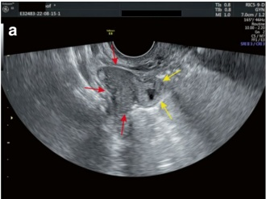
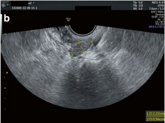

2. Premature Ovarian Insufficiency (POI) and Premature Ovarian Failure (POF)
POI is a clinical syndrome defined by the loss of ovarian activity before the age of 40 years. It is characterized by menstrual disturbances (amenorrhea or oligomenorrhea) along with elevated gonadotropins and low estradiol levels [17]. The diagnosis of POI is based on the presence of menstrual disturbances and biochemical confirmation. The guideline development group recommends the following diagnostic criteria: (a) age <40 years, (b) oligo/amenorrhea for at least four months, (c) an elevated bFSH >25 U/L on two occasions, more than 4 weeks apart [17].
Common etiological factors for POI include hereditary conditions (e.g., Turner's syndrome), medical causes (e.g., ovarian surgery, radiotherapy), immune factors, and environmental influences (e.g., poor lifestyle and environmental factors). In comparison to DOR, POI places greater emphasis on age, etiology, and menstrual status. The early stage of POI is manifested as DOR, while the severe stage of POI is known as POF. POF is characterized by amenorrhea, elevated gonadotropin levels (FSH >40 U/L), decreased estrogen levels, and varying perimenopausal symptoms in women under 40 years of age. POF represents the end stage of POI [18] (Fig. 4.6).
Low levels of serum estrogen may lead to low bone mass and act as a predisposing factor for coronary heart disease, thereby negatively impacting life expectancy. Appropriate physiological estrogen/progestin therapy is considered the standard management for POI. Hormone replacement therapy (HRT) typically consists of administering estrogen for 22 to 28 days, with the addition of progesterone for the


final 10 to 14 days. In this context, 17- $ \beta $ estradiol is preferred over ethinylestradiol or conjugated equine estrogens for estrogen replacement. While there may be advantages to using micronized natural progesterone, the strongest evidence for endometrial protection supports oral cyclical combined treatment [17]. HRT is not recommended for women with a history of breast or ovarian cancer, breastfeeding mothers, or women who have reached the age of 50 years. The decision to stop HRT should be based on individual factors [18].
Case Presentation:
A 28-year-old female patient was admitted to our hospital with the chief complaint of “irregular menstruation for 3 years and difficulty conceiving.” The patient had previously experienced regular menstruation with a 30-day cycle but developed irregular periods over the past 3 years, ranging from 5 to 90 days. She had a history of taking oral progesterone for withdrawal bleeding. Her last menstrual period was two months ago, and despite taking oral progesterone due to delayed menstruation, she did not experience withdrawal bleeding. The patient sought fertility guidance at our reproductive center.
The patient had no prior ovulation monitoring or salpingography. Her husband’s semen analysis results were normal. A transvaginal ultrasound examination at our clinic revealed that the uterus was normal in size and morphology, with no noticeable space-occupying lesions. The endometrium was 3 mm thick and showed good continuity. The right ovary measured 1.8 cm × 1.1 cm × 0.9 cm, while the left ovary measured 2.1 cm × 0.8 cm × 0.9 cm. Both ovaries appeared solid, and no antral follicles were observed. The preliminary diagnosis was a high probability of POI.
To further define the diagnosis, sex hormones and AMH tests were performed. The results showed E2 <15 pg/mL, FSH 108 IU/L, LH 28 IU/L, P 0.2 ng/mL, PRL 14 ng/mL, T 0.4 ng/mL, and AMH 0.06 ng/mL.
Current Diagnosis: POF
The patient was informed about her condition and started on Femoston for HRT. Follicular development was monitored during the estradiol phase in the first three treatment cycles, but no dominant follicles were observed.
During the fourth treatment cycle, sex hormone testing was repeated at the time of menstruation, revealing the following results: E2 60 pg/mL, FSH 19.57 IU/L, LH 7.6 IU/L, and P 1.3 ng/mL.
In this cycle, follicular development was not monitored during the estrogen phase. On the 12th day of her menstrual cycle, a self-administered urine LH strip test yielded a strong positive result. The patient returned to the hospital the following morning for an ultrasound examination (as shown in Fig. 4.6a, b). The ultrasonographic findings included the following: (a) Bilateral ovaries appeared solid, with no evident antral follicles. (b) Endometrial thickness of 9 mm, showing a homogeneous hyperechogenic pattern. (c) A thick-walled protrusion (indicated by the yellow arrows) emanating from the right ovary (indicated by the red arrows) was observed, with a small non-echoic area inside.
The imaging features of this protrusion, in conjunction with the patient's medical and menstrual history, suggested a high likelihood of a postovulatory corpus luteum. The patient was instructed to have intercourse as soon as possible and switch her Femoston regimen to estradiol hydrogesterone for the second half of the cycle.
Fourteen days later, a pregnancy test was performed, which returned negative. Femoston therapy was continued for the fifth treatment cycle. On day 8 of estradiol administration, a dominant follicle was detected. Subsequent monitoring showed successful maturation of the follicle, which was then retrieved for IVF. The process resulted in a good-quality embryo for cryopreservation.